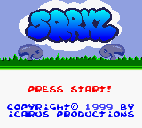
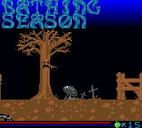

This smooth scrolling jump'n'run which is very popular on the TI-8x calcs is now even available for the Nintendo Gameboy! Guide Sqrxz - a bug - through tricky levels to his home. Avoid spiktraps, nasty blobs, dangerours hedgehogs and flying bats!
The new version supports
CoLoR and thus much better graphics! The game also includes 10 musical tunes, 12 tough levels + lots of cool effects!
THE GAME

Upon starting the game, our logo is displayed, followed by the title screen. Please note the smooth gradient coloring of the title and the palette mirroring effects of the scrolling credits text. After all of the text has scrolled by (takes approx. 20 seconds), a demo of the game is shown demonstrating how to solve the very first level to give the player a clue of what's to come.
Pressing the START button will begin the game itself. The left and right arrows are used for movement in either direction and the up arrow or A can be used for jumping. Additionally the down arrow or B in conjunction with the left/right arrows allow you to move more slowly enabling you to fall into certain pits. Re-pressing the jump button when landing on an enemy will make Sqrxz jump higher.
The aim of the game is to get to the exit door and collect as many apples as possible in the given time (red bar at bottom). Later levels also feature water (remaining oxygen = blue bar).
NOTES
During the game, please note the color transition of the sky, the very smooth scrolling, as well as the sound driver, although this is currently in its beta stages - it may produce some little errors together with sound effects at the present point but it already features special effects including tremolo and vibrato to enrich the sound!
FUTURE ADDITIONS
The current ROM only gives an idea of the final game. Here's what we're currently adding/intending to add:
- Various, more colorful scenarios. The current scenario, graveyard, doesn't feature many different colors. Future scenarios (like jungle, ice planet, ...) will be more colorful and have more background detail - we're also planning to bring more than the standard 56 colors on screen (actually, the current beta has 70 on-screen colors). There'll be also a load of new enemies, and Sqrxz will wear various clothes according to the scenario.
- New game elements, including elevators, slanted tiles (for hills, ...), springboards, traps, other ways the kill enemies and new moving techniques (such as flying on a bird's back, ...) ensure more fun in playing.
- Vertical scrolling levels.
- Completely new soundtrack and sound FX, using the GBC's capabilities to the full (such as digitized wave playback, etc.)
Related documents
![[Icarus Productions] - Click for main page](img/iplogo.gif)